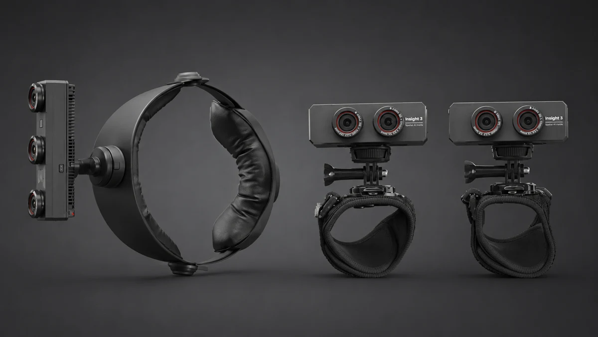

项目档案
-
-
-
红外 LED 定位
从红外画面识别灯点，与已知标记模型匹配，实时显示六自由度位姿。
-
Muse
做了一个触摸屏语音终端，用它在电脑旁发起和查看 Codex 会话。
-
Ego Data Pipeline
为原始录制生成动作标注，复核后导出到 Viewer。
-
多 X5 蓝牙配对与对时
在三台 X5 上验证配对、互信和组网对时，再用两台板试验控制器时钟。
-
EgoHalo 设备与数据工程
我从零搭建采集控制台，也参与浏览器上传、OTA、相机运行时、固件和云端处理。
-

联系
- 邮箱
- nusniumu@gmail.com
- 微信
- NM19854495229
- 电话
- 19854495229
- GitHub
- NUSNiuMu 的仓库